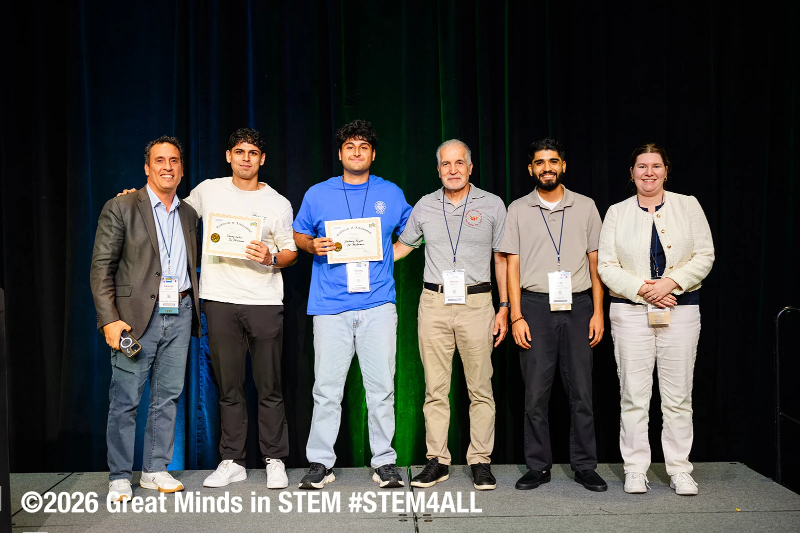

GMiS Hackathon / CTF
Our team, The Phishermen, won the advanced track at the Great Minds in STEM conference in Albuquerque, New Mexico. The competition was sponsored by Johns Hopkins University and brought together more than 200 students.
Team: Danny Galvis, AJ Bayate & Alexander Bloomer.
Research at the conference
I also presented SensorShield, my research on how motion-sensor machine learning models hold up against attacks such as sensor spoofing and FGSM.
